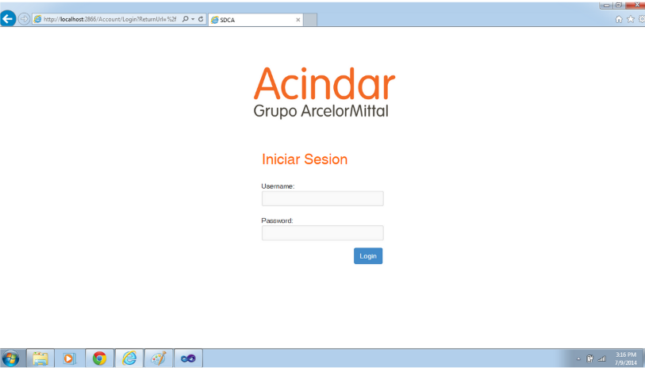
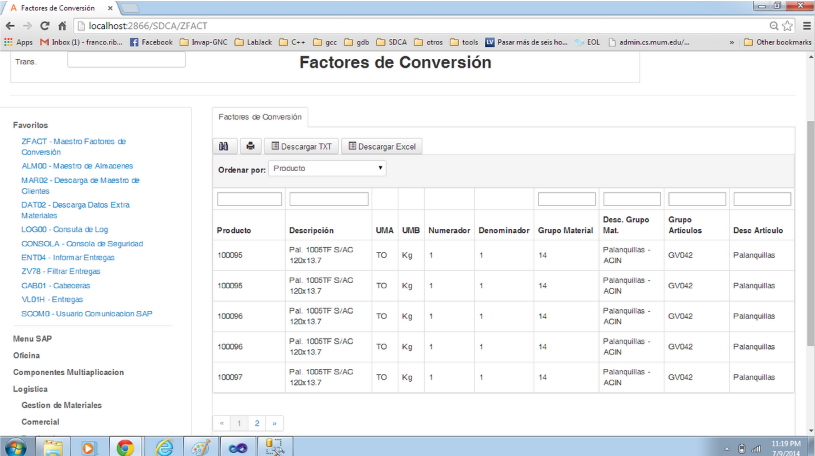

- 
-

- 
Description
Sistema web que permite la administración de un gran flujo de información relevante referida a la contingencia de barcos. Emplea web services para comunicarse con otros sistemas existentes e integrarse a SAP, tanto para recibir como para enviar información. Además, incluye un sistema de colectoras, el cual permite multiples dispositivos conectados empleando los protocolos telnet y ssh. El mismo sistema también fue reescrito en .net